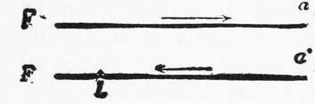

Relations Between The Differential Response And The Understanding Of Tropism. Continued
Description
This section is from the book "The Psychic Life Of Insects", by E. L. Bouvier. Also available from Amazon: The Psychic Life of Insects.
Relations Between The Differential Response And The Understanding Of Tropism. Continued
To make the currant-worms give characteristic responses of differential sensitiveness, it is not necessary to put them in the presence of a shadow zone. If we bend the horizontal supporting plane a little to one side toward the light, they are quickly influenced by the force of gravitation; they stop, raise the anterior part of the body, change their route, and often turn at an angle of 180 degrees to reverse their way, and to walk for a time against the light. These reactions may be attributed to the positive phototropism of the creature, but it acts very like the meal-worm, which has a contrary tropism, and which nevertheless, when one inclines the plane on the side of the light, tends to direct itself toward the lower side. Similar results follow a breath of wind, a light shock, or the holding of a warm but not luminous object near the animal.
In the same way variations in the intensity of the light can provoke a kind of geotropismi "A starfish," says Bohn, "is motionless near the surface of the water; a diminution of the light, even slight, but quick, brings about a vertical descending movement." Here the positive geotropism appears to be a response of the differential sensitiveness to the light variation.
This is enough to allow us to conclude with the same author that in the manifestations of differential sensitiveness "we need not take into consideration the specificity of the stimulus"
Let us go still further, and, in fact, return to our experimental subjects, the positively phototropic currant-worms, and also the meal-worms, or the maggots whose phototropism is negative. If the currant-worm encounters a shady ispot, when it is going toward the luminous source, it ordinarily makes a half-turn, directs itself abruptly away from the source, then stops, turns again, and resumes its direction toward the light. The mealworm and the maggots act in the same way when in the course of their progress they encounter a luminous place ; they iturn around, proceed for a longer or shorter time towards the source, then stop, half turn, and begin again to go away from it. One may say that, driven away from the natural course, they return at a gallop. In the phenomena of differential sensibility, it seems that stimulating variations bring about the development of a certain amount of energy, and that when this is once spent, the creature stops and once more takes its first direction. This is, according to Bohn, the law of the return to the state of repose, which we can better call the law of the return to the former state.
I have reached a fourth law which applies to the tropisms of differential sensibility. We know that the bedbug, strongly phototropic, makes a half-turn (Figure l,a) when it is put in the presence of a window, F, and leaves rapidly. While it was fleeing Bohn interposed the flame of a lamp, L, between the insect and the window ; this had the effect of provoking a new half-turn (a1), which brought the insect not only in the direction of the lamp, but into that of the window, for the two directions were the same. Bohn cites in addition the curious experiment of Jennings, in which an in-Pusorian, Spirostom-um ambiguum, when a noxious droplet is placed in the liquid containing it, always retires, whatever the position of the droplet. To a variation of the excitant, concludes Bohn, the animal responds always in the same way, whatever be the "direction of the stimulus in relation to the axis of the body."
The experiments of Max Morse (1909) oblige us to make the meaning of this conclusion more exact. A meal-worm was introduced by this biologist into a rubber tube five centimeters long and of such a diameter that the animal found itself tightly lodged. The head end of the worm was directed toward the sun, the rays of which fell obliquely on the tube. The creature tried to turn and finally the extremity of its abdomen came out of the tube to the length of four segments, which were exposed to the light. This brought about an inverse march and the worm reentered the tube. A calorific screen had been placed between the sun and the tube, and a cold paper introduced under it, so that thermic influences were excluded. No response was obtained when the abdomen was exposed to the light and had received a coating of vasoline and lampblack. The author concludes that "all the surface of the body is sensitive to a light of great intensity."
Fig. 1.-Bedbug leaving, at a, a window F, and returning to a1, when a light L is interposed between it and the window. (After Bohn).
I do not wish to dispute the existence of der-matoptic sensations which other authors have suggested, but it is proper to ask whether with insects these sensations are sufficiently strong to provoke on the abdomen the reactions of differential sensitiveness. Could it not have been the close imprisonment to which the worm was subjected which caused the response obtained by Morse, and would it not be wise to work under more normal conditions? This is what I have tried : When the larva was walking upon a sheet of paper in the shadow of a book, I have moved the book so that the sun's rays quickly struck the animal, both on the sides and on the extremity of the abdomen, and I have never seen the least reaction. However, to the light rays is added the sun's heat. Parker reached the same negative result in working with Vanessa antiopa. We have seen that this insect presents a positive phototropism when it flies or walks in the sunlight, and that a shadow rapidly brings about the reactions of differential sensibility, but Parker has noticed that the reaction is produced at the end of from fourteen to seventeen seconds when the shadow of a finger or of a pencil reaches the eyes, and that there is none when this shadow is projected upon any other part of the insect. Then, if it is true to say that the responses of differential sensitiveness do not depend "on the direction of the stimulus in relation of the axis of the body," one cannot fail to add, as a general thesis more or less, that they are independent of the stimulated points ; with the insects, with the articulates, the head end of the body, which is the ordinary seat of tropic phenomena, is also a preferred center for the phenomena of differential sensitiveness, but this conclusion cannot be applied to the lower animals, where an incomplete differentiation of the organs renders the sensitiveness diffuse.
Continue to:
- prev: Relations Between The Differential Response And The Understanding Of Tropism
- Table of Contents
- next: Combination Of Differential Sensitiveness With The Tropisms